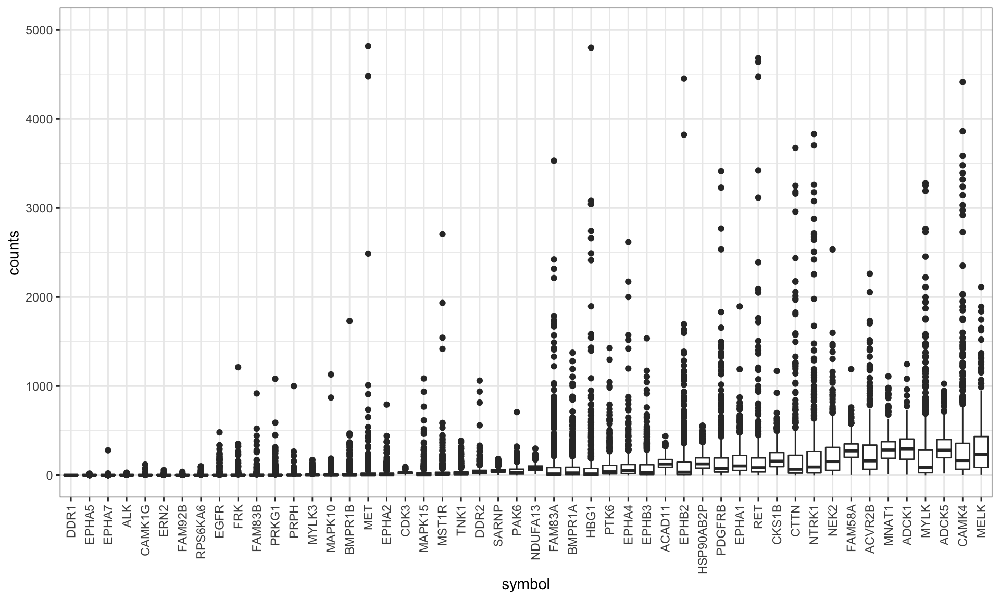
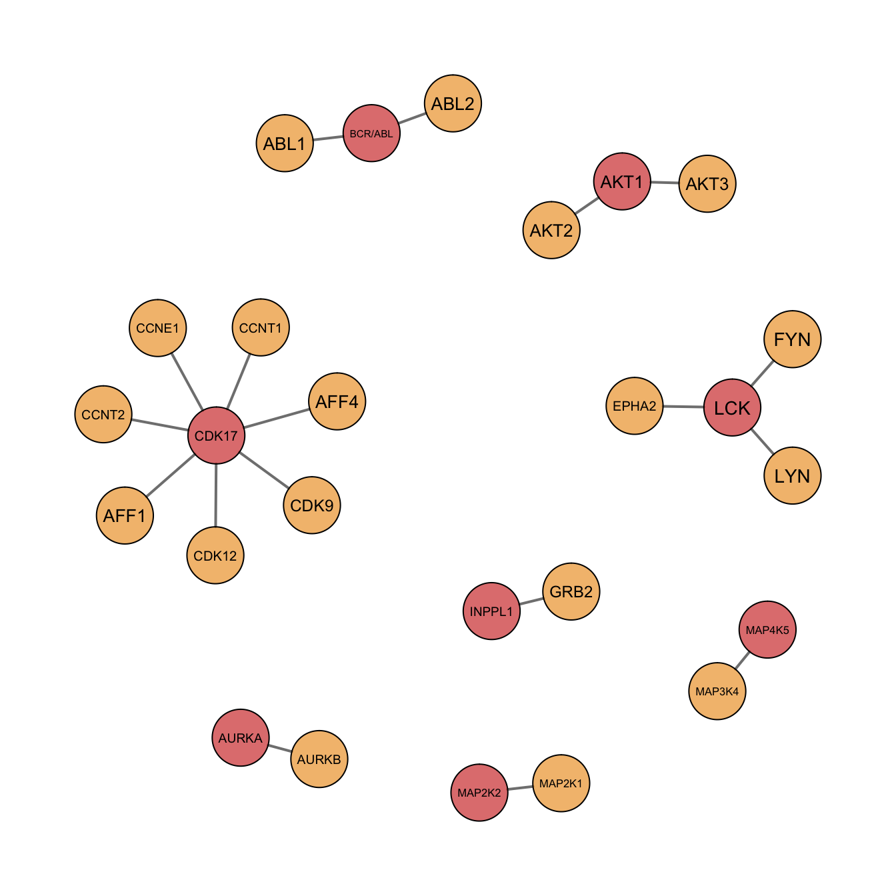

Last updated: 2021-11-05
Checks: 6 1
Knit directory: DepInfeR/analysis/
This reproducible R Markdown analysis was created with workflowr (version 1.6.2). The Checks tab describes the reproducibility checks that were applied when the results were created. The Past versions tab lists the development history.
The R Markdown is untracked by Git. To know which version of the R Markdown file created these results, you’ll want to first commit it to the Git repo. If you’re still working on the analysis, you can ignore this warning. When you’re finished, you can run wflow_publish to commit the R Markdown file and build the HTML.
Great job! The global environment was empty. Objects defined in the global environment can affect the analysis in your R Markdown file in unknown ways. For reproduciblity it’s best to always run the code in an empty environment.
The command set.seed(20211005) was run prior to running the code in the R Markdown file. Setting a seed ensures that any results that rely on randomness, e.g. subsampling or permutations, are reproducible.
Great job! Recording the operating system, R version, and package versions is critical for reproducibility.
Nice! There were no cached chunks for this analysis, so you can be confident that you successfully produced the results during this run.
Great job! Using relative paths to the files within your workflowr project makes it easier to run your code on other machines.
Great! You are using Git for version control. Tracking code development and connecting the code version to the results is critical for reproducibility.
The results in this page were generated with repository version 43be8a7. See the Past versions tab to see a history of the changes made to the R Markdown and HTML files.
Note that you need to be careful to ensure that all relevant files for the analysis have been committed to Git prior to generating the results (you can use wflow_publish or wflow_git_commit). workflowr only checks the R Markdown file, but you know if there are other scripts or data files that it depends on. Below is the status of the Git repository when the results were generated:
Ignored files:
Ignored: .DS_Store
Ignored: .Rhistory
Ignored: .Rproj.user/
Ignored: analysis/.DS_Store
Ignored: analysis/.Rhistory
Ignored: analysis/analysis_RNAseq_cache/
Ignored: analysis/figure/
Ignored: data/.DS_Store
Ignored: output/.DS_Store
Untracked files:
Untracked: analysis/analysis_EMBL2016.Rmd
Untracked: analysis/analysis_GDSC.Rmd
Untracked: analysis/analysis_RNAseq.Rmd
Untracked: analysis/analysis_beatAML.Rmd
Untracked: analysis/process_EMBL2016.Rmd
Untracked: analysis/process_GDSC.Rmd
Untracked: analysis/process_beatAML.Rmd
Untracked: analysis/process_kinobeads.Rmd
Untracked: code/utils.R
Untracked: data/BeatAML/
Untracked: data/EMBL2016/
Untracked: data/GDSC/
Untracked: data/Kinobeads/
Untracked: data/RNAseq/
Untracked: manuscript/
Untracked: output/BeatAML_result.RData
Untracked: output/EMBL_result.RData
Untracked: output/EMBL_resultSub.RData
Untracked: output/GDSC_result.RData
Untracked: output/allTargets.rds
Untracked: output/inputs_BeatAML.RData
Untracked: output/inputs_EMBL.RData
Untracked: output/inputs_GDSC.RData
Unstaged changes:
Modified: README.md
Modified: _workflowr.yml
Modified: analysis/_site.yml
Deleted: analysis/about.Rmd
Modified: analysis/index.Rmd
Deleted: analysis/license.Rmd
Deleted: output/README.md
Note that any generated files, e.g. HTML, png, CSS, etc., are not included in this status report because it is ok for generated content to have uncommitted changes.
There are no past versions. Publish this analysis with wflow_publish() to start tracking its development.
Paper: https://www.nature.com/articles/s41586-018-0623-z
Data download: https://ctd2-data.nci.nih.gov/Public/OHSU-1/BeatAML_Waves1_2/
Packages
library(depInfeR)
library(missForest)
library(DESeq2)
library(tidyverse)
source("../code/utils.R")
knitr::opts_chunk$set(dev = c("png","pdf"))Load pre-processed kinobead table table
tarList <- readRDS("../output/allTargets.rds")Read in BeatAML raw drug screen datasets
# BeatAML screening data
beatAML <- read.delim("../data/BeatAML/OHSU_BeatAMLWaves1_2_Tyner_DrugResponse.txt", header = TRUE, sep = "\t", dec = ".")
# clinical data annotation
beatAMLannot <- read.delim("../data/BeatAML/OHSU_BeatAMLWaves1_2_Tyner_ClinicalSummary.txt",
header = TRUE, sep = "\t", dec = ".",na.strings=c(""," ","NA"))
# RNA Seq raw counts
BeatAMLcounts <- read_csv("../data/BeatAML/BeatAML_RNASeq_rawcounts_2018_10_24.csv.gz")Rows: 63677 Columns: 503── Column specification ────────────────────────────────────────────────────────
Delimiter: ","
chr (6): Gene, Symbol, Chr, Exon_Start, Exon_End, Strand
dbl (497): Length, GeneStart, GeneEnd, 12-00023, 12-00051, 12-00066, 12-0015...
ℹ Use `spec()` to retrieve the full column specification for this data.
ℹ Specify the column types or set `show_col_types = FALSE` to quiet this message.Process drug names of BeatAML table
beatAML <- mutate(beatAML, inhibitor = tolower(inhibitor)) %>%
mutate(inhibitor = gsub("[- ]","", inhibitor))
beatAML <- separate(data = beatAML, col = inhibitor, into = c("inhibitor", "synonym"), sep = "\\(") %>% mutate(synonym = gsub("\\)", "", synonym)) Warning: Expected 2 pieces. Missing pieces filled with `NA` in 30103 rows [422,
423, 424, 425, 426, 427, 428, 429, 430, 431, 432, 433, 434, 435, 436, 437, 438,
439, 440, 441, ...].Find overlapped drugs by drug names
overDrug_AML_name <- intersect(tarList$Drug, beatAML$inhibitor)Filter AML for not found
missDrug <- setdiff(unique(beatAML$inhibitor), overDrug_AML_name)
notFoundAML <- filter(beatAML, inhibitor %in% missDrug)Filter targetlist for not found
missTarget <- setdiff(unique(tarList$Drug),overDrug_AML_name)
notFoundTarget <- filter(tarList, Drug %in% missTarget)Modify the name in target table after manual inspection of synonyms
tarList <- mutate(tarList, Drug = ifelse(Drug=="ruboxistaurin", "ly333531", Drug))
tarList <- mutate(tarList, Drug = ifelse(Drug=="bms387032", "sns032", Drug))Get the final overlapped drug list
finalList <- intersect(tarList$Drug,beatAML$inhibitor)Rename drug column in BeatAML
beatAML <- dplyr::rename(beatAML, Drug = inhibitor)
beatAML_druglist <- filter(beatAML, !is.na(`Drug`), !duplicated(Drug))Combine the lists
targets <- left_join(tarList, beatAML_druglist, by = "Drug") %>% dplyr::select(Drug, `Target Classification`, EC50,`Apparent Kd`, `Gene Name`) %>% filter(!is.na(Drug)) %>% filter(Drug %in% finalList) How many drugs?
length(unique(targets$Drug))[1] 62Get count values from RNAseq
BeatAML_expr <- dplyr::select(BeatAMLcounts, -c(Gene, Chr, Exon_Start, Exon_End, Strand, Length, GeneStart, GeneEnd))
# remove duplicates
BeatAML_expr <- BeatAML_expr[!duplicated(BeatAML_expr$Symbol),] %>% column_to_rownames("Symbol")
BeatAML_expr <- data.matrix(BeatAML_expr)
#create DeSeq Dataset
coldata <- beatAMLannot %>% filter(LabId %in% colnames(BeatAML_expr))
BeatAML_expr <- BeatAML_expr[, colnames(BeatAML_expr) %in% beatAMLannot$LabId]
BeatAML_expr <- BeatAML_expr[,order(colnames(BeatAML_expr))]
coldata <- coldata %>% column_to_rownames("LabId")
coldata <- coldata[order(rownames(coldata)),]
dds <- DESeqDataSetFromMatrix(countData = BeatAML_expr,
colData = coldata,
design = ~ 1)converting counts to integer mode#estimate size factors
dds <- estimateSizeFactors(dds)
#targets that are not in RNAseq dataset
setdiff(unique(targets$`Gene Name`), rownames(dds)) [1] "CSNK2A1;CSNK2A3"
[2] "PDPK1;PDPK2P"
[3] "BRD4;BRD3"
[4] "BCR/ABL"
[5] "Q6ZSR9"
[6] "ZAK"
[7] "FAM58A;FAM58BP"
[8] "MOB1A;MOB1B"
[9] "STK26"
[10] "PRKX;PRKY"
[11] "HIST2H2BE;HIST1H2BB;HIST1H2BO;HIST1H2BJ;HIST3H2BB;HIST1H2BA"
[12] "DDT;DDTL" #actually two genes have different gene names used.
symbolMap <- c("BRD4;BRD3" ="BRD3", ZAK = "MAP3K20", "CSNK2A1;CSNK2A3" = "CSNK2A1", "PDPK1;PDPK2P" = "PDPK1", "BRD4;BRD3" = "BRD3", "FAM58A;FAM58BP" = "FAM58A", "MOB1A;MOB1B" = "MOB1A", "PRKX;PRKY" = "PRKX", "DDT;DDTL" = "DDT" )
targets <- mutate(targets, `Gene Name` = ifelse(`Gene Name` %in% names(symbolMap),
symbolMap[`Gene Name`],
`Gene Name`))
#get count data
targetCount <- dds[rownames(dds) %in% targets$`Gene Name`,colnames(dds) %in% beatAMLannot$LabId]
#check again
setdiff(unique(targets$`Gene Name`), rownames(targetCount)) #some genes are indeed not in RNAseq dataset[1] "BCR/ABL"
[2] "Q6ZSR9"
[3] "MAP3K20"
[4] "STK26"
[5] "HIST2H2BE;HIST1H2BB;HIST1H2BO;HIST1H2BJ;HIST3H2BB;HIST1H2BA"Plot the expression values
#prepare plot tab
plotTab <- data.frame(counts(targetCount, normalized = FALSE)) %>%
rownames_to_column("ID") %>%
mutate(symbol = rownames(targetCount)) %>%
gather(key = "patID", value = "counts", -symbol, -ID)
#deal with one gene, multiple transcript problem
#only keep the most aboundant transcript
transTab <- group_by(plotTab, ID, symbol) %>% summarize(total = sum(counts)) %>%
ungroup() %>%
arrange(desc(total)) %>% distinct(symbol, .keep_all = TRUE)`summarise()` has grouped output by 'ID'. You can override using the `.groups` argument.plotTab <- filter(plotTab, ID %in% transTab$ID)
#get the 80% quantile expression value
exprMed <- group_by(plotTab, symbol) %>% summarise(avgCount = quantile(counts,0.8)) %>%
arrange(avgCount) %>% top_n(-50, avgCount)
#only plot the 50 lowest expressed genes
plotTab <- filter(plotTab, symbol %in% exprMed$symbol) %>%
mutate(symbol = factor(symbol, levels = exprMed$symbol))
ggplot(plotTab, aes(x= symbol, y = counts)) + geom_boxplot() +
theme_bw() + theme(axis.text.x = element_text(angle = 90, hjust =1, vjust =.5)) + ylim(0, 5000)Warning: Removed 26 rows containing non-finite values (stat_boxplot).
Removed the targets that are not expressed in AML samples
#80% quantile < 10
geneRemove <- filter(exprMed, rank(avgCount) / n() < 0.8)
geneRemove <- filter(exprMed,avgCount < 10)$symbol
targets <- filter(targets, !`Gene Name` %in% geneRemove)Change column names
colnames(targets) <- c("drugName", "targetClassification","EC50","Kd","targetName")Turn target table into drug-target affinity matrix
tarMat_kd <- dplyr::filter(targets, targetClassification == "High confidence") %>%
dplyr::select(drugName, targetName, Kd) %>%
spread(key = "targetName", value = "Kd") %>%
remove_rownames() %>% column_to_rownames("drugName") %>% as.matrix()As a pre-processing of the drug-protein affinity matrix with kd values (or optionally other affinity measurement values at roughly normal distribution) we chose to perform the following steps:
ProcessTargetResults <- processTarget(tarMat_kd, ifKd = TRUE , ifCorFeat = TRUE)load("../output/BeatAML_result.RData")
CancerxTargets<- rowSums(result$freqMat)
CancerxTargets <- names(CancerxTargets[CancerxTargets>0])
plotTarGroups(ProcessTargetResults, CancerxTargets)
The z-score was chosen as a suitable measurement value for our drug screening response matrix as it corresponds to a normalization for each drug over all cell lines. When working with AUC or IC50 values, a suitable normalization of the values is recommended.
BeatAML_viab <- filter(beatAML, Drug %in% targets$drugName) %>%
dplyr::select(Drug, lab_id , ic50, auc)
# filter out multiple samples per patient
beatAMLannot <- beatAMLannot[!duplicated(beatAMLannot$PatientId), ]
BeatAML_viab_subs <- subset(BeatAML_viab, rownames(BeatAML_viab) %in% rownames(beatAMLannot))
#create matrix
BeatAML_matrix <- BeatAML_viab %>% dplyr::select(Drug, lab_id, auc) %>%
tidyr::spread(key = lab_id, value = auc) %>%
remove_rownames() %>% column_to_rownames("Drug") %>%
as.matrix()missTab <- data.frame(NA_cutoff = character(0), remain_Samples = character(0), stringsAsFactors = FALSE)
for (i in 0 : 138) {
a <- dim(BeatAML_matrix[,colSums(is.na(BeatAML_matrix)) <= i])[2]
missTab [i,] <- c(i, a)
}
#missTab
plot(missTab, type = "l")From looking at the missing value distribution, we choose cell lines with a maximum of 15 missing values per cell line (= 24%) as usable for the MissForest imputation method.
BeatAML_mat_subset <- BeatAML_matrix[,colSums(is.na(BeatAML_matrix)) <= 15]impRes <- missForest(t(BeatAML_mat_subset)) missForest iteration 1 in progress...done!
missForest iteration 2 in progress...done!
missForest iteration 3 in progress...done!
missForest iteration 4 in progress...done!
missForest iteration 5 in progress...done!
missForest iteration 6 in progress...done!
missForest iteration 7 in progress...done!imp_missforest <- impRes$ximp
BeatAML_mat_forest <- t(imp_missforest)
colnames(BeatAML_mat_forest) <- colnames(BeatAML_mat_subset)
rownames(BeatAML_mat_forest) <- rownames(BeatAML_mat_subset)#using column-wise Z-score, because we focus more on the effect of different drugs on the same patient sample.
BeatAML_mat_forest.scale <- t(mscale(t(BeatAML_mat_forest)))annoTab_missval <- data.frame(sample = character(0), missing_value_perc= numeric(0), stringsAsFactors = FALSE)
missinglist <- colSums(is.na(BeatAML_mat_subset))
for (i in 1 : length(BeatAML_mat_forest[1,])) {
a <- round((missinglist[i] / length(BeatAML_mat_forest[,1]))*100, 1)
annoTab_missval [i,] <- c(colnames(BeatAML_mat_subset)[i], a)
}
annoTab_missval$missing_value_perc <- as.numeric(annoTab_missval$missing_value_perc)
annoTab_missval <- annoTab_missval %>% mutate(sample = gsub("[- ]",".",sample))
annoTab_missval <- annoTab_missval %>%
data.frame() %>% remove_rownames() %>%
column_to_rownames("sample") sample_annot <- dplyr::select(beatAMLannot,1:2, 88:159) %>% distinct(LabId, .keep_all = TRUE) %>% mutate_if(is.factor, as.character) %>% column_to_rownames("LabId")
rownames(sample_annot) <- gsub("-",".",rownames(sample_annot))
rownames(sample_annot) <- gsub(" ",".",rownames(sample_annot))
sample_annot[sample_annot!="negative"] <- "positive"
sample_annot <- sample_annot[, colSums(sample_annot == "positive", na.rm=TRUE) > 3]
sample_annotation <- merge(annoTab_missval, sample_annot, all.x=T, by='row.names') %>% column_to_rownames("Row.names")
sample_annotation$SF3B1 <- sample_annotation$SF3B1 %>% replace_na("negative")
sample_annotation$KMT2A <- sample_annotation$KMT2A %>% replace_na("negative")
sample_annotation$BCOR <- sample_annotation$BCOR %>% replace_na("negative")
sample_annotation$ASXL1 <- sample_annotation$ASXL1 %>% replace_na("negative")
# Annotation with BTK cluster status from Paper
Ibrutinib_sensitive <- c("15.00269","15.00383","16.00102","15.00482","16.00831","15.00556","15.00593","15.00417","16.00120","16.00078","15.00680","16.01017", "16.00027","15.00237","15.00872","15.00909","16.00292","15.00755","16.00094","14.00613","16.00770","16.00356","16.00498","12.00051","16.00278","15.00276","15.00633","15.00650","15.00766","13.00149","15.00807","16.00220","13.00195","16.00271","15.00883","16.00867","16.01216","16.00465","15.00701","15.00043","14.00041","14.00559","13.00552","16.01185")
sample_annotation$Ibrutinib_sensitive <- c(NA)
sample_annotation$Ibrutinib_sensitive[rownames(sample_annotation) %in% Ibrutinib_sensitive] <- 1
sample_annotation$Ibrutinib_sensitive[is.na(sample_annotation$Ibrutinib_sensitive)] <- 0
sample_annotation[, -1] <- lapply(sample_annotation[, -1], as.factor)ProcessTargetResults_BeatAML <- ProcessTargetResults
tarMat_BeatAML <- ProcessTargetResults$resTarMat
viabMat_BeatAML <- BeatAML_mat_forest.scale[rownames(tarMat_BeatAML),]
annotation_beatAML <- sample_annotation
save(tarMat_BeatAML, viabMat_BeatAML, annotation_beatAML, ProcessTargetResults_BeatAML, file = "../output/inputs_BeatAML.RData")
sessionInfo()R version 4.0.2 (2020-06-22)
Platform: x86_64-apple-darwin17.0 (64-bit)
Running under: macOS 10.16
Matrix products: default
BLAS: /Library/Frameworks/R.framework/Versions/4.0/Resources/lib/libRblas.dylib
LAPACK: /Library/Frameworks/R.framework/Versions/4.0/Resources/lib/libRlapack.dylib
locale:
[1] en_US.UTF-8/en_US.UTF-8/en_US.UTF-8/C/en_US.UTF-8/en_US.UTF-8
attached base packages:
[1] parallel stats4 stats graphics grDevices utils datasets
[8] methods base
other attached packages:
[1] forcats_0.5.1 stringr_1.4.0
[3] dplyr_1.0.7 purrr_0.3.4
[5] readr_2.0.0 tidyr_1.1.3
[7] tibble_3.1.3 ggplot2_3.3.5
[9] tidyverse_1.3.1 DESeq2_1.28.1
[11] SummarizedExperiment_1.18.2 DelayedArray_0.14.1
[13] matrixStats_0.60.0 Biobase_2.48.0
[15] GenomicRanges_1.40.0 GenomeInfoDb_1.24.2
[17] IRanges_2.22.2 S4Vectors_0.26.1
[19] BiocGenerics_0.34.0 missForest_1.4
[21] itertools_0.1-3 iterators_1.0.13
[23] foreach_1.5.1 randomForest_4.6-14
[25] depInfeR_0.1.0
loaded via a namespace (and not attached):
[1] readxl_1.3.1 backports_1.2.1 Hmisc_4.5-0
[4] workflowr_1.6.2 igraph_1.2.6 plyr_1.8.6
[7] splines_4.0.2 BiocParallel_1.22.0 digest_0.6.27
[10] htmltools_0.5.1.1 fansi_0.5.0 magrittr_2.0.1
[13] checkmate_2.0.0 memoise_2.0.0 cluster_2.1.2
[16] doParallel_1.0.16 tzdb_0.1.2 annotate_1.66.0
[19] modelr_0.1.8 vroom_1.5.3 jpeg_0.1-9
[22] colorspace_2.0-2 blob_1.2.2 rvest_1.0.1
[25] haven_2.4.1 xfun_0.24 crayon_1.4.1
[28] RCurl_1.98-1.3 jsonlite_1.7.2 genefilter_1.70.0
[31] survival_3.2-11 glue_1.4.2 gtable_0.3.0
[34] zlibbioc_1.34.0 XVector_0.28.0 shape_1.4.6
[37] abind_1.4-5 scales_1.1.1 DBI_1.1.1
[40] Rcpp_1.0.7 xtable_1.8-4 htmlTable_2.2.1
[43] tmvnsim_1.0-2 foreign_0.8-81 bit_4.0.4
[46] Formula_1.2-4 glmnet_4.1-2 htmlwidgets_1.5.3
[49] httr_1.4.2 lavaan_0.6-9 RColorBrewer_1.1-2
[52] ellipsis_0.3.2 pkgconfig_2.0.3 XML_3.99-0.6
[55] farver_2.1.0 nnet_7.3-16 sass_0.4.0
[58] dbplyr_2.1.1 locfit_1.5-9.4 utf8_1.2.2
[61] reshape2_1.4.4 tidyselect_1.1.1 labeling_0.4.2
[64] rlang_0.4.11 later_1.2.0 AnnotationDbi_1.50.3
[67] munsell_0.5.0 cellranger_1.1.0 tools_4.0.2
[70] cachem_1.0.5 cli_3.0.1 generics_0.1.0
[73] RSQLite_2.2.7 broom_0.7.9 fdrtool_1.2.16
[76] evaluate_0.14 fastmap_1.1.0 yaml_2.2.1
[79] knitr_1.33 bit64_4.0.5 fs_1.5.0
[82] glasso_1.11 pbapply_1.4-3 nlme_3.1-152
[85] xml2_1.3.2 compiler_4.0.2 rstudioapi_0.13
[88] png_0.1-7 reprex_2.0.0 geneplotter_1.66.0
[91] pbivnorm_0.6.0 bslib_0.2.5.1 stringi_1.7.3
[94] highr_0.9 qgraph_1.6.9 lattice_0.20-44
[97] Matrix_1.3-4 psych_2.1.6 ggsci_2.9
[100] vctrs_0.3.8 pillar_1.6.2 lifecycle_1.0.0
[103] jquerylib_0.1.4 data.table_1.14.0 bitops_1.0-7
[106] corpcor_1.6.9 httpuv_1.6.1 R6_2.5.0
[109] latticeExtra_0.6-29 promises_1.2.0.1 gridExtra_2.3
[112] codetools_0.2-18 gtools_3.9.2 assertthat_0.2.1
[115] rprojroot_2.0.2 withr_2.4.2 mnormt_2.0.2
[118] GenomeInfoDbData_1.2.3 rlist_0.4.6.1 hms_1.1.0
[121] grid_4.0.2 rpart_4.1-15 rmarkdown_2.9
[124] git2r_0.28.0 lubridate_1.7.10 base64enc_0.1-3